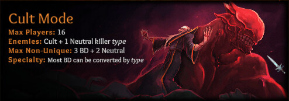

Greetings!
The latest patch is live to help the new citizens to get familiar with life in Castle Adiart. Introducing Weekly Faction Rotation system - as loyal Blue Dragons, citizens are bound to study everything about the enemies - Unseen and Cult, to ensure the protection of the throne. With weekly rotation to face off one faction at a time, new loyal citizens will gradually understand how to investigate and defend themselves while new recruits of the dark side learn how to blend in and master the craft of deception. The Royal Court will also offer sample logbooks to help new citizens get on their feet! Come and join us in the courtroom to unveil the next truth!
Patch Highlights
- New Faction Rotation System - Rotate Unseen and Cult game every Wednesday at 0:00 UTC.
- Class card logbook tab is available with Templates, Examples, and Notes.

System and Game Improvements
- Improved class card UI by keeping the last tab open.
- Improved class abilities UI by simplifying the wording for clarity. Hover over will reveal additional information.
See you in the King’s Courtroom!